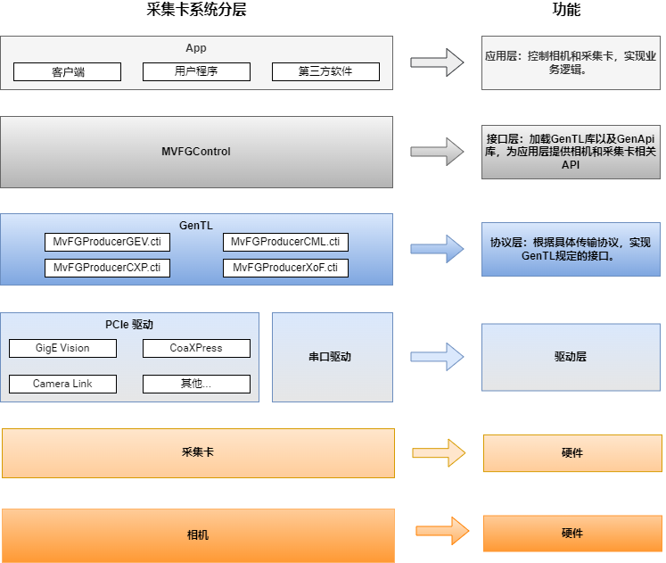

概述
工业采集卡SDK开发指南主要说明API使用。API库为所有采集卡提供统一的访问控制接口，可简化接口调用，支持多种类型卡同时使用。
目前，SDK支持GigE Vision、CoaXPress、Camera Link和XoFLink类型的采集卡，并提供包括图像采集、图像处理和事件等多类型接口。您可调用SDK提供的接口，在软件中灵活实现需求。
开始使用
| 发版说明 | 记录SDK各版本的主要更新情况。 |
| 编程引导 | 介绍C接口的基本使用流程。 |
| API参考 | 介绍C的接口函数、数据结构及状态码。 |
| 示例程序 | 介绍常见用例和接口基本的使用方法。 |
运行环境
| GigE Vision采集卡 |
| 硬件配置：PCI-E gen2 × 4 |
| 软件环境：Ubuntu16.04-24.04 64bits，gcc/g++版本要求4.8.5及以上 |
| CoaXPress采集卡 |
| 硬件配置：PCI-E gen2 × 8（CoaXPress-6采集卡）、PCI-E gen3 × 8（CoaXPress-12采集卡） |
| 软件环境：Ubuntu16.04-24.04 64bits，gcc/g++版本要求4.8.5及以上 |
| Camera Link采集卡 |
| 硬件配置：PCI-E gen2 × 4 |
| 软件环境：Ubuntu16.04-24.04 64bits，gcc/g++版本要求4.8.5及以上 |
| XoFLink采集卡 |
| 硬件配置：PCI-E gen2 × 8 |
| 软件环境：Ubuntu16.04-24.04 64bits，gcc/g++版本要求4.8.5及以上 |
总体层次结构
